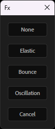
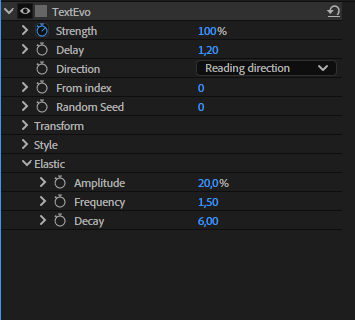

Fx¶
The Fx button adds an Elastic, a Bounce or an Oscillation to the strength of a Textevo.

Select one or more Textevo effects (or text layers, for all their Textevo), click Fx and choose:
| Fx | What it does | Controls |
|---|---|---|
| None | back to the standard Textevo | |
| Elastic | overshoots and wobbles after each keyframe | Amplitude, Frequency, Decay |
| Bounce | bounces back after each keyframe | Elasticity, Gravity, Max bounces |
| Oscillation | a continuous sine wave on the strength | Amplitude, Frequency, Phase per character |
The Fx controls are in a new group at the end of the effect: tweak and keyframe them like any other parameter.

The Fx follows the delay of each letter, word or line, like the rest of the animation. The effect keeps its name, its position, its keyframes and its "Based on" mode, and the Fx is saved in the copies and the presets.
Elastic¶
After each keyframe of the Strength, the text goes past its value and wobbles back to it.
- Amplitude: how far it goes past the value.
- Frequency: the number of wobbles per second.
- Decay: how fast the wobbles fade out.
Bounce¶
After each keyframe of the Strength, the text bounces back, like a ball on the floor.
- Elasticity: the height of each bounce compared to the previous one.
- Gravity: higher values give faster, smaller bounces.
- Max bounces: the number of bounces.
Oscillation¶
A continuous sine wave added to the strength, even without keyframes: floating texts, pulses...
- Amplitude: the size of the oscillation, in % of strength.
- Frequency: the number of oscillations per second.
- Phase per character: offsets each letter, word or line, for a wave through the text.
Eased keyframes¶
The Elastic and the Bounce start from the speed of the Strength when it reaches a keyframe. A keyframe eased on arrival (Easy Ease, or the "Second key" influence of the settings) arrives with a speed of 0: nothing happens after it.
When you choose Elastic or Bounce, or paste or apply a preset using them, Textevo detects these keyframes and asks what to do:
- Optimized keys: linear arrival, and a slow departure from the previous keyframe (at least 75 % of influence): the speed builds up and the keyframe is reached fast. The strongest effect.
- Linear arrival: only removes the ease on arrival.
- Keep the keys: changes nothing.
Check Don't ask again to always do the same thing. The choice can be changed in the settings: "Elastic / bounce on eased keys".
Tip
Keyframes closer to each other also give a stronger elastic or bounce: the arrival is faster.